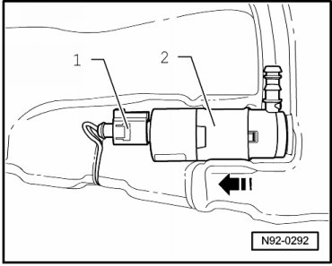

Headlamp Washer Pump
Headlamp Washer Pump
Headlamp Washer Pump (V11) is installed at windshield washer fluid reservoir and headlamp cleaning system in right wheel housing.
Removing
- Switch off ignition, switch off all electrical consumers and remove ignition key.
- Remove tank for windshield washer system and headlamp cleaning system --> [ Windshield and Headlamp Washer Fluid Reservoir ] Windshield and Headlamp Washer Fluid Reservoir.
- Disconnect harness connector - 1 - at Headlamp Washer Pump (V11) - 2 -.

- Turn Headlamp Washer Pump (V11) - 2 - in tank so that hose connection of Headlamp Washer Pump (V11) points upward.
- Remove Headlamp Washer Pump (V11) - 2 - from tank - arrow -.
Installing
Install in reverse order of removal, noting the following:
- Bleed headlamp washer system after completing assembly work --> [ Headlamp Washer System, Bleeding ] Headlamp Washer System, Bleeding.